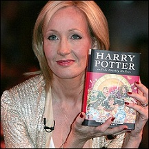

J. K. Rowling
J.K.罗琳(J.K. Rowling),1965年7月31日出生于英国格温特郡,毕业于英国埃克塞特大学,英国作家。 1989年,罗琳有了创作哈利·波特的念头。1997年6月,推出哈利·波特系列第一本《哈利·波特与魔法石》。 随后,罗琳又分别于1998年与1999年创作了《哈利·波特与密室》和《哈利·波特与阿兹卡班的囚徒》。 2001年,美国华纳兄弟电影公司决定将小说的第一部《哈利·波特与魔法石》搬上银幕。2003年6月,她再创作出第五部作品《哈利·波特与凤凰社》。 2004年,罗琳荣登《福布斯》富人排行榜。2005年7月推出了第六部《哈利·波特与混血王子》, 2007年7月推出终结篇《哈利·波特与死亡圣器》。截至2008年,《哈利·波特》系列7本小说被翻译成67种文字在全球发行4亿册。 2010年,哈利·波特电影系列的完结篇《哈利·波特与死亡圣器》拍摄完成。 2017年6月12日,美国《福布斯》公布了2017年度全球百位名人榜,J.K.罗琳排名第三。2017年12月12日,J·K·罗琳被英国皇室授予“荣誉勋爵”(Companion of Honour)。
荣誉与奖项
J.K.罗琳获得了许多荣誉和奖项,包括：
- 1999 年和 2008 年英国图书奖年度作家和终身成就奖
- 1998年和1999年书商协会年度作家
- 2008年美国哈佛大学毕业典礼演讲者
- 2008年爱丁堡奖
- 2008年都柏林大学詹姆斯·乔伊斯奖
- 2008年南岸秀杰出成就奖
- 2009年法国荣誉军团骑士勋章
- 2010年丹麦安徒生奖
埃克塞特大学、圣安德鲁斯大学、纳皮尔大学、爱丁堡大学、美国达特茅斯学院、美国哈佛大学、阿伯丁大学荣誉学位。
她的新书

《哈利·波特与被诅咒的孩子》第一册和第二册：
《哈利·波特与被诅咒的孩子》是一部由两部分组成的西区舞台剧,由杰克·索恩编剧,改编自索恩、JK罗琳和约翰·蒂芙尼的原创新故事。该剧于2016年6月7日在伦敦皇宫剧院开始预演,并于2016年7月30日正式首演。2015年11月18日,作为近十年来第一个全新的魔法世界故事,排练剧本正式发布,成为哈利·波特的第八部官方故事,具体涉及年长的哈利·詹姆·波特的时间线和他在英国魔法社会中的挣扎。该剧主要发生在 2020 年,但始于 2017 年。故事开始于《哈利·波特与死亡圣器》事件发生19年后,讲述了哈利·波特（现在是魔法部的一名雇员）和他的小儿子阿不思·西弗勒斯·波特,一连串黑暗的事件展开。